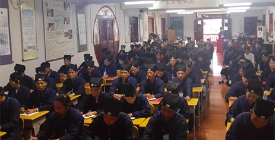

湖南省第五届正一派传度活动在怀化市玉皇宫举行
来源：湖南省道协时间：2018-07-02

2018年6月29日，湖南省第五届正一派传度活动在怀化玉皇宫隆重举行。本次活动由湖南省道教协会主办，在怀化市玉皇宫承办，为期三天。湖南省民宗委一处副调研员王银生，怀化市民宗委副主任孙叶根，湖南省道协副会长、长沙市道教协会会长马涌奇道长亲临现场指导工作。法会特礼请湖南省道协副会长周心寅道长任传度工作组组长、副秘书长陈新春道长任监度师、副秘书长甘星罗道长任保举师，怀化市道教协会顾问吴冬梅道长任传度师。
本次传度活动，来自全省各地的报到人数共102人，按中国道协《正一派传度活动管理办法》、湖南省道协《正一派传度暂行规定》，湖南省道协传度工作组严格组织考核，录取93人。
在三大师的带领下，传度弟子们严格遵守戒律、秩序井然，齐诵《早晚功课经》，先后学习《传度、教职认定等相关规定》、《传度目的与意义》、《入道修持》、《道教经典精要》、《三皈九戒》等培训课程。
传度，是道教正一派的传统仪范，正式入道的仪规，先传后度，“传”是传承的意思，“度”是度化的意思。凡是正一派弟子入道弟子，必需有师传授，经考察后，必立誓戒，然后传予度世之法，谓之传度。
（湖南省道协供稿）